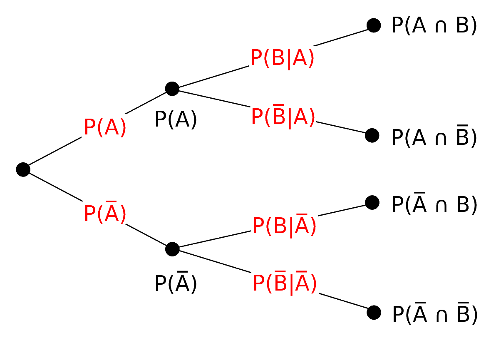

Probabilidades
LFIS 325 - 2022/02
Eloy Alvarado Narváez
Universidad de Valparaíso
08/09/22
Enfoques de la probabilidad
Escuelas de probabilidad
- Enfoque clásico
- Enfoque frecuentista
- Enfoque bayesiano
Enfoque clásico
Este enfoque también llamado enfoque apriori tiene por característica principal la asignación igualitaria de una medida de ocurrencia para un resultado de un experimento aleatorio (experimento equiprobable).
Esta asignación de probabilidad se determina antes de observar los resultados experimentales.
- ¿Algún ejemplo?
Enfoque frecuentista
Este enfoque también llamado enfoque empírico, determina la medida de ocurrencia con base en la proporción de veces que ocurre un resultado favorable en un determinado número de observaciones o experimentos. Este enfoque no asigna probabilidades a priori a los posibles resultados de un experimento aleatorio.
- ¿Algún ejemplo?
Enfoque bayesiano
Este enfoque también llamado enfoque subjetivo, determina la medida de ocurrencia en base a una expectativa razonable basado en el conocimiento del investigador.
El enfoque bayesiano es particularmente útil cuando se tiene poca información del experimento, y este puede ser realizado para actualizador mis probabilidades, esto debido a que cada realización del experimento aleatorio me otorgará información adicional para determinar correctamente mis probabilidades.
Técnicas de conteo
Principio de multiplicación
Supongamos que un procedimiento \(1\), puede hacerse de \(n_1\) maneras. Supongamos que un segundo procedimiento \(2\), se puede hacer de \(n_2\) maneras. También supongamos que cada una de las maneras de efectuar 1 puede ser seguida por cualquiera de las \(n_2\) de efectuar 2.
Entonces el procedimiento que consta de \(1\) seguido por \(2\) se puede hacer de \(n_1 \times n_2\) maneras. De igual manera podemos generalizar lo anterior a cualquier número de procedimientos.
Principio de adición
Supongamos que un procedimiento \(1\), se puede hacerse de \(n_1\) maneras, y que un segundo procedimiento \(2\), se puede hacer de \(n_2\) maneras. Supongamos además que no es posible que ambos procedimientos, 1 y 2, se realicen. Entonces el número de maneras como se puede hacer el procedimiento 1 ó 2 es de \(n_1 + n_2\).
- Factorial: Sea \(n \in \mathbb{N}\), entonces se define \(n\) factorial como \(n \times (n-1) \times (n-2) \times \dots \times 1\), y se simboliza por \(n!\) Empleado en situaciones donde una vez seleccionado un elemento, éste puede ser nuevamente seleccionado.
Ejemplo
Considere un grupo de personas conformado por 15 hombres y 10 mujeres. Se eligen 3 personas al azar, la primera será la presidente de la comisión, la segunda vicepresidente y la tercera secretario. ¿De cuantas formas se puede conformar la comisión?
Permutación
Se define la permutación de \(r\) elementos sobre \(n\) como el número de arreglos distintos que se pueden hacer con \(r\) elementos de un total de \(n\), importando el orden en el que salen los elementos, se simboliza por:
\[P_{r}^{n}=\dfrac{n!}{(n-r)!}\]
Ejemplo
Un directorio compuesto por: Presidente, Secretario y Tesorero se debe elegir de un total de 10 candidatos. ¿Cuántos directorios diferentes se pueden conformar?
\[P_{3}^{10}=\dfrac{10!}{(10-3)!}=\dfrac{10!}{7!}=720\]
Combinatoria
Se define la combinatoria de \(r\) elementos sobre \(n\) como el número de arreglos distintos que se pueden hacer con \(r\) elementos de un total de \(n\) sin importar el orden en que son asignados. Esta expresión se anota por:
\[C_{r}^{n}={{n}\choose{r}}=\dfrac{n!}{r!(n-r)!}\]
Ejemplo
Para formar un comité se van a elegir a tres personas de un total de 10. El número de grupos diferentes de tres personas que podrían elegirse, sin importar el orden en el que cada uno de los grupos está dado por:
\[C_{3}^{10}=\dfrac{10!}{3!(10-3)!}=\dfrac{10!}{3!7!}=\dfrac{720}{6}=120\]
Conceptos fundamentales de probabilidad
- Espacio muestral: Se define como el conjunto de todos los posibles resultados del experimento, lo anotamos por \(\Omega\).
- Suceso o evento: Es cualquier subconjunto de \(\Omega\), usualmente lo anotamos con letras mayúsculas. \((A,B,C,\dots)\).
- Espacio de sucesos: Es el conjunto de todos los subconjuntos de \(\Omega\). Lo anotamos por \(2^{\Omega}\).
- \(\sigma\)-álgebra: Es una familia de subconjuntos del espacio de sucesos, \(\Sigma \subset 2^{\Omega}\), y que cumplen con ciertas propiedades.
Clasificación del espacio muestral
- Discreto
- Numerable: Finito o Infinito.
- Continuo
- No numerable: Acotado o No acotado.
Definición formal de probabilidad
El par \((\Omega,\Sigma)\) se dice espacio medible, y la función \(\mathbb{P}:\Sigma \rightarrow \mathbb{R}^{+}\), es una medida de probabilidad si satisface:
- \(0\leq \mathbb{P}[A] \leq 1, \forall A \in \Sigma\)
- \(\mathbb{P}[\Omega]=1\)
- Dados \(\displaystyle A_1,A_2,\dots \in \Sigma \Rightarrow \mathbb{P}\left[ \bigcup_{i=1}^{n} A_n \right] = \sum_{i=1}^{n} \mathbb{P}[A_i], \hspace{5pt} \forall i\)
Algunas propiedades
- \(\mathbb{P}[A]+\mathbb{P}[A^c]=\mathbb{P}[\Omega]\)
- \(\mathbb{P}[\phi]=1-\mathbb{P}[\phi^c]=1-\mathbb{P}[\Omega]=0\)
- \(\mathbb{P}[A \cup B]=\mathbb{P}[A]+\mathbb{P}[B] - \mathbb{P}[A\cap B]\) . Si este último término \((\mathbb{P}[A\cap B])\) es cero, se dice que \(A\) y \(B\) son eventos mutuamente excluyentes.
- \(\mathbb{P}[A-B]=\mathbb{P}[A\cap B^c]\)
- \(\mathbb{P}[A \cap B]=\mathbb{P}[A]\mathbb{P}[B]\). Si \(A\) y \(B\) son independientes.
Ejercicio
Sea A el evento en el cual un hombre vivirá 10 años más y sea B el evento en el cual su esposa viva 10 años más. Supongamos que \(\mathbb{P}(A)=\frac{1}{4}\) y \(\mathbb{P}(B)=\frac{1}{3}\). Supongamos que A y B son eventos independientes, encuentre la probabilidad de que en 10 años:
- Ambos estén vivos.
- Al menos uno esté vivo.
- Ninguno esté vivo.
- Solamente la esposa esté viva
Probabilidades clásicas
Este planteamiento probabilista establece que los eventos del espacio muestral sean expresados de la forma más elemental posible, con el fin de poder aceptar la posibilidad de que cada posible resultado sea igualmente posible.
\[\mathbb{P}[A]=\dfrac{\#A}{\#\Omega}\]
Ejemplo
Considere que se tienen 10 sacos de semillas. Se sabe que 4 son de una variedad y el resto de otra. Un cliente compra 3 sacos. ¿Cuál es la probabilidad de que los sacos sean de las dos variedades?
\(A:{ \text{Los sacos comprados son de las dos variedades} }\)
\[\mathbb{P}[A]=\dfrac{\#A}{\#\Omega}=\dfrac{ C_{1}^{4} \times C_{2}^{6} +C_{2}^{4} \times C_{1}^{6} }{C_{3}^{10}}\]
Probabilidades condicionales
El concepto de probabilidad condicional se emplea para redefinir el cálculo de probabilidad de ocurrencia de un evento dada cierta condición (o información). Lo anotamos por:
\[\mathbb{P}[B | A]=\dfrac{\mathbb{P}[B \cap A]}{\mathbb{P}[A]}\]
Lo anterior, mide la probabilidad de que el evento \(B\) ocurra dado que el evento \(A\) ocurrió. Notar que si los eventos \(A\) y \(B\) son independientes se tiene:
\[\mathbb{P}[B|A]=\dfrac{\mathbb{P}[B]\mathbb{P}[A]}{\mathbb{P}[A]}=\mathbb{P}[B]\]
Por lo que, en palabras, si los eventos son independientes, la probabilidad condicional se reduce a la probabilidad simple.
Regla multiplicativa
Se refiere a la determinación de la probabilidad de ocurrencia conjunta de dos o más eventos. Para el caso de dos eventos, se tiene:
\[\mathbb{P}[A\cap B]=\mathbb{P}[A]\mathbb{P}[B|A]\]
En el caso de tres eventos, se tiene:
\[\mathbb{P}[A \cap B \cap C]=\mathbb{P}[A] \mathbb{P}[B|A] \mathbb{P}[C| (A \cap B)]\]
Diagrama de árbol
Los diagramas de árbol son particularmente útiles para ilustrar los posibles eventos asociados con observaciones o ensayos secuenciales.
Regla de Bayes
La regla de Bayes permite actualizar ciertas probabilidades a priori para transformarse en probabilidades posteriori de un evento (experimento). La importancia de la regla de Bayes consiste en que se aplica en contexto de eventos secuenciales y además, de que proporciona la base para determinar la probabilidad condicional de un evento a la luz de un evento especifico que ha ocurrido.
\[\mathbb{P}[A|B]=\dfrac{\mathbb{P}[A\cap B]}{\mathbb{P}[B]}=\dfrac{\mathbb{P}[A]\mathbb{P}[B|A]}{\mathbb{P}[A]\mathbb{P}[B|A]+\mathbb{P}[A^c]\mathbb{P}[B|A^c]}\]
Ejemplo
Un fabricante posee dos máquinas que producen el mismo artículo. Se sabe que una de ella (A) produce un \(5\%\) de defectuosos y la otra (B) un \(3\%\). Por otra parte el \(60\%\) de las unidades es producido por la máquina A.
- Defina sucesos e identifique las probabilidades.
- Si el artículo es no defectuoso. ¿Cuál es la probabilidad que el artículo provenga de la máquina A?
Ejemplo
Un grupo de estudiantes se inscribió en dos asignaturas, A y B. De los resultados se observa que el 40% aprobó A. El 45% aprobó al menos una asignatura. De los que aprobaron A, el 37.5% aprobó B. Se elige un alumno al azar, calcule la probabilidad que:
- Haya aprobado ambas asignaturas.
- Haya aprobado B.
- No haya aprobado ni A ni B
Desarrollo ejemplo
Definiendo los eventos:
\[A: \text{ El alumno aprobó la asignatura }A \quad B: \text{ El alumno aprobó la asignatura } B\]
por enunciado sabemos que:
\[\mathbb{P}(A) = 0.4 \hspace{15pt} \mathbb{P}(A\cup B)=0.45 \hspace{15pt} \mathbb{P}(B\vert A)=0.375\]
Por lo que:
- Haya aprobado ambas asignaturas.
\[\mathbb{P}(A \cap B)= \mathbb{P}(B\vert A)* \mathbb{P}(A)=0.375 * 0.4=0.15\]
- Haya aprobado \(B\).
\[\mathbb{P}(B)=\mathbb{P}(A\cup B)-\mathbb{P}(A)+\mathbb{P}(A\cap B)=0.45-0.4+0.15= 0.2\]
- No haya aprobado ni \(A\) ni \(B\)
\[\mathbb{P}(A^c \cap B^c)=\mathbb{P}((A \cup B)^c)=1-\mathbb{P}(A \cup B)=1-0.45\]
Pregunta tipo prueba
Una persona esta interesada en invertir su dinero en acciones en el mercado bursátil nacional. Estudios estadísticos indican que las preferencias por las distintas acciones están representadas por las del tipo A y tipo B. Además, el 45% de preferencias son por las acciones del tipo A. Si la acción es de tipo A, la probabilidad de tener una rentabilidad positiva es de 0.7. Si la acción es de tipo B, la probabilidad de tener una rentabilidad positiva es de 0.6.
- Defina sucesos e identifique las probabilidades.
- ¿Cuál es la probabilidad de tener una rentabilidad positiva?
- Si la rentabilidad es negativa, ¿Cuál es la probabilidad que no se haya invertido en acciones del tipo A?
Desarrollo pregunta tipo prueba
Definiendo eventos como:
- \(A: \text{ La persona invierte en acciones de tipo }A\)
- \(B: \text{ La persona invierte en acciones de tipo }B\)
- \(R: \text{ Se obtiene rentabilidad positiva tras invertir}\)
Así,
\[\mathbb{P}(A)=0.45 \hspace{15pt} \mathbb{P}(R\vert A)=0.7 \hspace{15pt} \mathbb{P}(R\vert B)=0.6\]
¿Cuál es la probabilidad de tener una rentabilidad positiva?
Por regla multiplicativa se tiene que:
\[\mathbb{P}(R)=\mathbb{P}(A)*\mathbb{P}(R\vert A)+\mathbb{P}(B)*\mathbb{P}(R\vert B)\]
reemplazando, tenemos que:
\[\mathbb{P}(R)=0.45*0.7+0.55*0.6=0.645\]
Continuación desarrollo
Si la rentabilidad es negativa, ¿Cuál es la probabilidad que no se haya invertido en acciones del tipo A?
Por enunciado se sabe que \(\displaystyle \mathbb{P}(R\vert B)=0.6 \Rightarrow \mathbb{P}(R^{c}\vert B)=0.4= \dfrac{\mathbb{P}(R^{c}\cap B)}{\mathbb{P}(B)}\), pero
\[\mathbb{P}(B)=0.55 \Rightarrow \mathbb{P}(R^{c}\cap B)= 0.4 * 0.55 = 0.22\]
Nos piden \(\mathbb{P}(B\vert R^{c})=\dfrac{\mathbb{P}(B\cap R^{c})}{\mathbb{P}(R^{c})}=\dfrac{0.22}{(1-\mathbb{P}(R))}\).
Por ítem anterior sabemos que \(\mathbb{P}(R)=0.645 \Rightarrow \mathbb{P}(R^{c})=1-0.645\).
Reemplazando,
\[\dfrac{\mathbb{P}(B\cap R^{c})}{\mathbb{P}(R^{c})}=\dfrac{0.22}{0.355}\approx 0.62\]
¿Qué veremos la próxima semana?
- Ejercitación para prueba #1
¿Qué deben preparar para la próxima semana?
- Estudiar pruebas de años anteriores
- Desarrollar guía de ejercicios
LFIS 325 - Semana 3